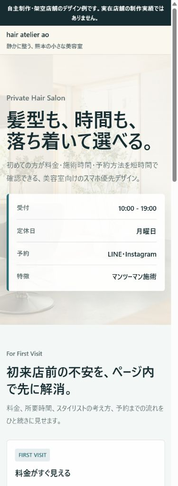
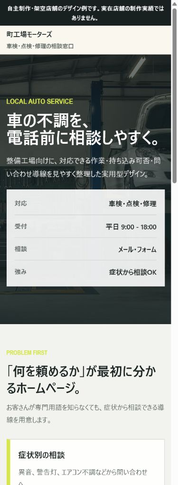
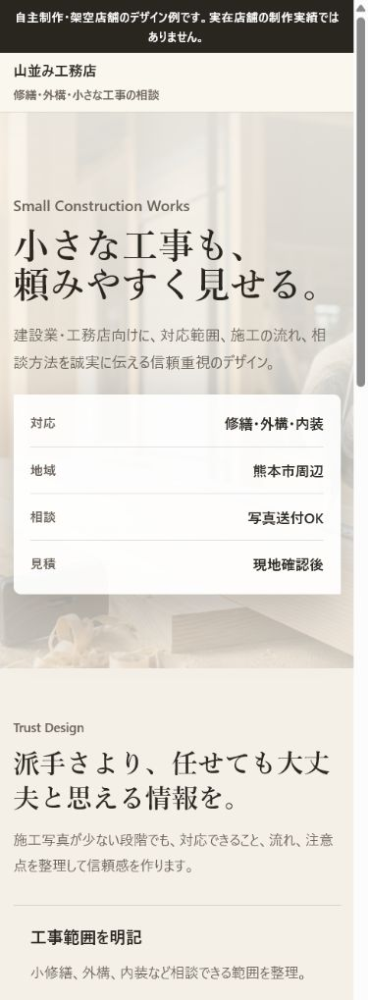

自主制作・架空店舗のデザイン例
カフェ｜編集・世界観重視
制作目的：Instagramから来た人に、メニュー・場所・営業時間を迷わず見てもらう。
主な掲載情報：人気メニュー、営業日、地図、Instagram、問い合わせ。
事例ページを見る熊本の飲食店・美容室・個人店向け
営業時間、料金、場所、予約方法、InstagramやGoogleマップへの導線を、スマホで見やすく整理します。
無料店舗Web診断
3つ
今のWeb導線を見て、改善点を分かりやすくお返しします。
制作を無理に勧めることはありません。
制作事例
同じテンプレートの色違いではなく、業種やお店の空気、来店までの流れに合わせて構成から変えます。下記は、自主制作の架空店舗デザイン例です。
自主制作・架空店舗のデザイン例
制作目的：Instagramから来た人に、メニュー・場所・営業時間を迷わず見てもらう。
主な掲載情報：人気メニュー、営業日、地図、Instagram、問い合わせ。
事例ページを見る
自主制作・架空店舗のデザイン例
制作目的：初めての方が料金、施術内容、予約方法を短時間で確認できるようにする。
主な掲載情報：メニュー、スタッフ紹介、予約導線、Googleマップ。
事例ページを見る自主制作・架空店舗のデザイン例
制作目的：お店の雰囲気、席数、予約、アクセスをまとめて来店前の不安を減らす。
主な掲載情報：写真、コース、営業時間、予約・DM導線。
事例ページを見る

「自分のお店ならどう見せるか」から一緒に考えます。
無料で3つの改善点を聞く無料店舗Web診断
分かりにくい部分や改善できそうな点を3つお送りします。制作を無理に勧めることはありません。
無料で3つの改善点を聞くできること
営業時間、料金、場所を1ページに整理
Instagramからホームページへ誘導
電話、予約、地図を押しやすくする
Google検索で確認できる公式情報を用意
スマホで見やすくする
文章や写真が揃っていなくても一緒に整理
料金
内容を確認後、制作前に正式な見積もりを出します。
おすすめ
33,000円〜
まずは公式情報を1ページにまとめたい個人店向け。
88,000円〜
複数の内容を分けて、少ししっかり見せたいお店向け。
5,500円〜
公開後の文章変更や写真差し替えを相談したい方向け。
別途費用になるもの：ドメイン代、サーバー代、有料素材、写真撮影、外部予約サービス利用料など。必要な場合だけ事前に説明します。
熊本出身・全国オンライン対応
菊地について
熊本出身の菊地です。自衛官として勤務した経験を活かし、約束したことを丁寧に進める姿勢を大切にしています。
営業担当から制作者へ話が変わる形ではなく、最初の相談から公開前の確認、修正まで本人が直接対応します。専門用語はできるだけ避けて説明します。
熊本市周辺は対面相談や簡単な撮影も相談可能です。遠方の方は全国オンラインで対応します。
無料で3つの改善点を聞く初めて依頼する方へ
相談の流れ